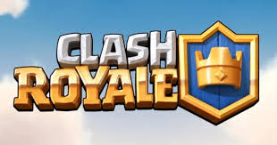
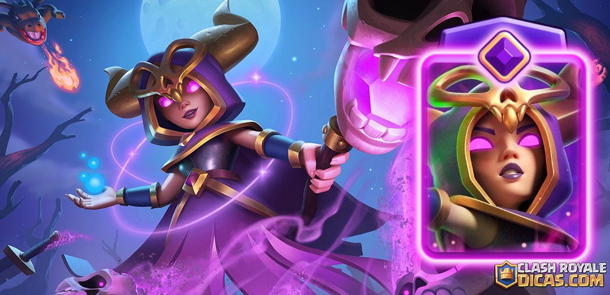

Meu jogo favorito é Clash Royale

Clash Royale é meu jogo favorito por seu estilo de jogo bem competitivo, que se diferencia de outros jogos.
## **História do Clash Royale**
**1. Criação e Lançamento**
Clash Royale é um jogo de estratégia em tempo real desenvolvido pela **Supercell**, os mesmos criadores de **Clash of Clans**.
O desenvolvimento começou após o sucesso de Clash of Clans, aproveitando o universo já estabelecido.
O jogo foi **lançado globalmente em 2 de março de 2016** para **iOS** e **Android**. Inicialmente, passou por testes limitados em
alguns países para ajustar equilíbrio e mecânicas.
**2. Conceito e Mecânica**
Clash Royale combina elementos de:
* **Cartas colecionáveis**: cada carta representa tropas, feitiços ou construções do universo de Clash.
* **Batalha em tempo real**: partidas curtas de 3 minutos (ou mais com tempo extra), em arenas 1v1 ou 2v2.
* **Progressão de jogador**: subir de arena, desbloquear cartas, evoluir tropas e ganhar coroas.
A ideia central era criar um **jogo rápido e estratégico** baseado no mesmo universo de Clash of Clans, permitindo que jogadores de
todas as idades pudessem competir globalmente.
**3. Crescimento e Popularidade**
* Nos primeiros meses, Clash Royale atingiu **milhões de downloads**, rapidamente tornando-se um dos jogos de estratégia mobile
mais populares do mundo.
* Em 2016 e 2017, o jogo entrou nas listas de **top 10 apps mais lucrativos** em iOS e Android.
* As atualizações constantes de cartas, arenas e eventos ajudaram a manter os jogadores ativos e engajados.
Minha carta favorita é a Bruxa!!!

A Bruxa virou minha carta favorita desde que ela lançou, que foi lá pra 2016 que lançou. Ela é uma carta muito forte, e sua EVO é absurda,
desde que lançou foi nerfada em todas atualizações, mas continua forte, eu adquirir hoje com ela vou subir facil de arena
Tabela de jogadores.
| Ano | Estimativa de Jogadores Ativos Mensais (MAU) |
| ---- | -------------------------------------------------------------- |
| 2016 | Lançamento global em março. Dados específicos não disponíveis. |
| 2017 | Aproximadamente 30 milhões. |
| 2018 | Aproximadamente 50 milhões. |
| 2019 | Aproximadamente 50 milhões. |
| 2020 | Aproximadamente 50 milhões. |
| 2021 | Aproximadamente 50 milhões. |
| 2022 | Aproximadamente 50 milhões. |
| 2023 | Aproximadamente 35 milhões. |
| 2024 | Variando entre 4,1 milhões (novembro) e 6,3 milhões (janeiro). |
| 2025 | Aproximadamente 56 milhões (agosto). |